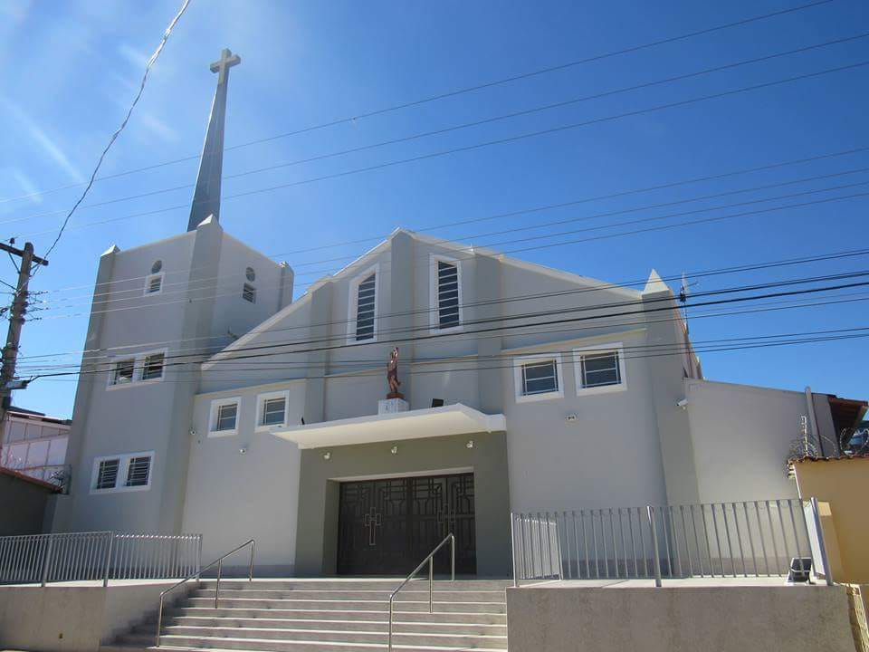

Paróquia São Sebastião
Rua Francisco David, 98, Vila Guilhermina
Montes Claros, Estado de Minas Gerais 39400-486
Telefone: (55)(38) 3222-4493
Horários das Missas
Domingo: 07:00, 09:00, 19:00
Segunda: 07:00, 19:00
Terça: 07:00, 19:00
Quarta: 07:00, 19:00
Quinta: 07:00, 19:00
Sexta: 07:00, 19:00
Sabado: 07:00